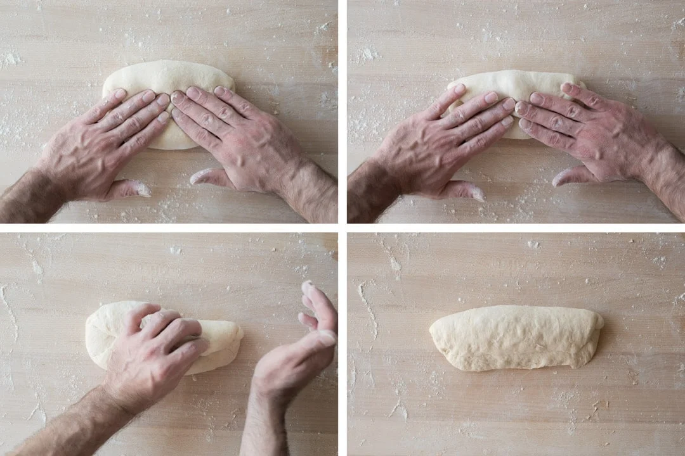

How to Make Bread: Step by Step
Ingredients
- 2 cups all-purpose flour (251.5g)
- ½ cup water (127.4g)
- 2 tsp salt (10.1g)
- 1 tsp dry yeast (2.3g)
- ¼ tbsp sugar (3.4g)
(Use grams for better results.)
Steps (Using Hands)
- Mix warm water, sugar, and yeast. Let it activate for 5-10 minutes
- Add flour and salt gradually. Mix until a sticky dough forms
- Knead dough for 8-10 minutes until smooth and no bumps
- Place dough in a bowl and cover it and let rise for at least 2 hours
- Roll dough into a log shape then flatten it and fold it into itself
- Roll into log shape again and place it seam down on a pan
- Lighly sprinkle more flower over the dough
- Preheat oven to 375°F (190°C). Bake for 30-35 minutes
- Cool and enjoy your own homemade fresh bread!
Steps (Using Mixer)
- Mix dry ingredients in mixer bowl and stir slightly
- Turn mixer on at low speed and slowly add water in increments
- Keep mixing until dough looks smooth and has no bumps
- Keep dough in the bowl and cover it and let rise for at least 2 hours
- Roll dough into a log shape then flatten it and fold it into itself
- Roll into log shape again and place it seam down on a pan
- Lighly sprinkle more flower over the dough
- Preheat oven to 375°F (190°C). Bake for 30-35 minutes
- Cool and enjoy your own homemade fresh bread!

Jump back to Home or go to Ingredients above.